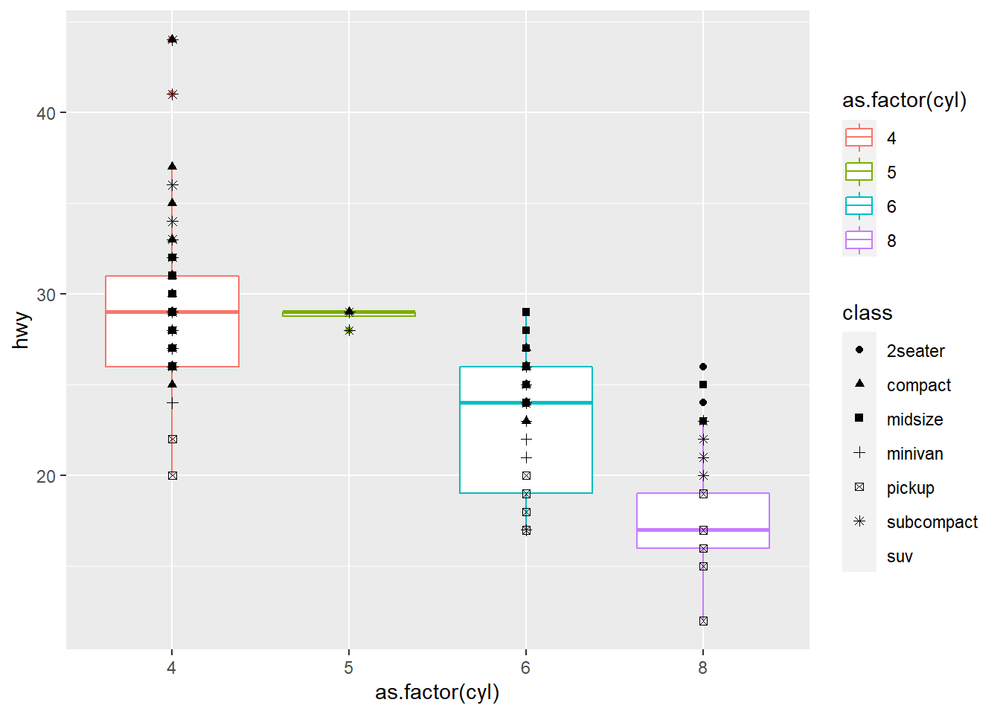

Chapter 5 Data visualization: ggplot2
Data visualization is the process of communication data properties through graphics. The power of a good visualization always supersedes the power of an advanced statistical computation. In fact, the only reason we would ever use advanced statistical computations is because the data cannot be visualized effectively.
For example, we don’t need to compute a linear regression to observe that the following data points are trending upward at approximately \(y\approx 2x\):
df = data.frame(
x = c(0,1,2,3,4,5),
y = c(0.8, 2.4,3.85, 5.5, 8.2, 10.1)
)
plot(df$x, df$y, xlim=c(0,5), ylim=c(0,12))We also don’t need to run a fancy clustering algorithm to locate the 2 clusters in the data set below:
df = data.frame(
x = c(1, 1., 1.8, 2.5, 3, 3, 9, 9, 9.5, 10, 10, 10.5),
y = c(20, 16, 18, 19, 16.5, 20, 0.5, 0.5, 1.1, 0.8, 0.4, 1.2)
)
plot(df$x, df$y)So if visualizations supersede complicated statistical methods, why do ever need to use advanced statistics and/or machine learning?
Data visualizations are powerful when the dimensions are low. Visualizations become less viable when dealing with higher dimensional data sets, e.g. when looking at 300 different variables to evaluate housing price. The remedy for higher dimensional data is to visualize data 2 dimensions at a time and try to reconstruct the “higher dimensional picture” in our minds.
5.1 Grammar of graphics
Visualizations can be done in base R without importing any libraries or packages. For example, we used the plot() function to a few rudimentary scatter plots. For more complicated graphics (and more sophisticated styling) we turn to the ggplot2 pakcage in the tidyverse library.
ggplot2 is built on a design principle called the grammar of graphics. The idea is that every visualization or “graphic” is composed of the same abstract parameters and producing any graphic is done by supplying values to these abstract parameters. These abstract parameters are:
Aesthetics: the visual elements that appear on screen, e.g. the \(x\)- and \(y\)- coordinates, shape, color and size of a point in a scatter plot or the color, height and width of the bars in a bar graph. The physical properties are determined by the values from a data set. Aesthetics come in 3 flavors:
- Geometric objects: the visual representation of the data.
- Axis: coordinate axis and/or visuals used as a frame of reference.
- Title: annotations to the visual elements.
Data: the actual data set in question. This is the “resevoir” of values to be supplied to the aesthetics.
Mappings: functions which assign values in the data set to physical properties in the aesthetic.
Scales: scaling features.
Facets: partitions and subdivisions of aesthetics by data values.
Essentially, all graphics will be composed of the following recipe of things:
- a default data set, aesthetics, and mappings from the data set to the aesthetics.
- one or more “layers”. A layer is defined to be one geometric object, one statistical transformation, one position adjustment, and (optionally) one data set and set of aesthetic mappings.
- one scale per aesthetic mapping used.
- one coordinate system.
- the facet specification.
5.2 Loading ggplot2
We can load ggplot2 by like so:
library(ggplot2)That being said, ggplot2 comes pre-packaged with the tidyverse library, so to use ggplot2 we can simply impor the tidyverse library.
# unload base ggplot2
detach("package:ggplot2", unload=TRUE)## Warning: 'ggplot2' namespace cannot be unloaded:
## namespace 'ggplot2' is imported by 'tidyverse' so cannot be unloaded# import tidyverse library
library(tidyverse)We’ll usually need the additional packages in the tidyverse to do analysis anyways, so loading them all at the beginning is usually a good idea.
ggplot2 comes equipped with some basic data sets to use for exploration. One such data set is the mpg data set which contains information about 234 cars and their mpg.
# load the mpg data set contained in the ggplot2
df <- ggplot2::mpg
# take a peak
head(df,10)## # A tibble: 10 × 11
## manufacturer model displ year cyl trans drv cty hwy fl class
## <chr> <chr> <dbl> <int> <int> <chr> <chr> <int> <int> <chr> <chr>
## 1 audi a4 1.8 1999 4 auto… f 18 29 p comp…
## 2 audi a4 1.8 1999 4 manu… f 21 29 p comp…
## 3 audi a4 2 2008 4 manu… f 20 31 p comp…
## 4 audi a4 2 2008 4 auto… f 21 30 p comp…
## 5 audi a4 2.8 1999 6 auto… f 16 26 p comp…
## 6 audi a4 2.8 1999 6 manu… f 18 26 p comp…
## 7 audi a4 3.1 2008 6 auto… f 18 27 p comp…
## 8 audi a4 quattro 1.8 1999 4 manu… 4 18 26 p comp…
## 9 audi a4 quattro 1.8 1999 4 auto… 4 16 25 p comp…
## 10 audi a4 quattro 2 2008 4 manu… 4 20 28 p comp…# get the dimensions
dim(df)## [1] 234 11# look at structure and columns
str(df)## tibble [234 × 11] (S3: tbl_df/tbl/data.frame)
## $ manufacturer: chr [1:234] "audi" "audi" "audi" "audi" ...
## $ model : chr [1:234] "a4" "a4" "a4" "a4" ...
## $ displ : num [1:234] 1.8 1.8 2 2 2.8 2.8 3.1 1.8 1.8 2 ...
## $ year : int [1:234] 1999 1999 2008 2008 1999 1999 2008 1999 1999 2008 ...
## $ cyl : int [1:234] 4 4 4 4 6 6 6 4 4 4 ...
## $ trans : chr [1:234] "auto(l5)" "manual(m5)" "manual(m6)" "auto(av)" ...
## $ drv : chr [1:234] "f" "f" "f" "f" ...
## $ cty : int [1:234] 18 21 20 21 16 18 18 18 16 20 ...
## $ hwy : int [1:234] 29 29 31 30 26 26 27 26 25 28 ...
## $ fl : chr [1:234] "p" "p" "p" "p" ...
## $ class : chr [1:234] "compact" "compact" "compact" "compact" ...The data set contains 234 rows with 11 columns, such as engine displacement displ, year, number of cylinders cyl and class.
5.3 Creating a ggplot
Recall that under the grammar of graphics paradigm, all graphics are constructed from the same 5 ingredients:
- data mapping to aesthetics
- layers of geometric objects equipped with mappings.
- scales for each mapping.
- a coordinate system.
- the facets.
This recipe allows us to systematically create any grammar of graphics plot (or “ggplot”).
5.3.1 Ingredient 1: data mapping to aesthetics
The first ingredient is to specify mappings from some data set to aesthetics.
library(ggplot2)
# create a new ggplot by specifying mappings from data to aesthetics
ggplot(data = df, mapping=aes(x=displ, y=hwy))
The code above creates a new ggplot object, using df as the underlying data source. The parameter mapping = aes(x=displ, y=hwy) specifies a mapping from the variables displ and hwy to the aesthetics x and y respectively. In other words, we are identifying the displ column the x-coordinates and the hwy column with the y-coordinates.
Notice that no graphic is generated. This is because we have not specified what kind of geometric objects to draw. The x and y values can represent points, bars, lines, etc. and we must specify which geometric object to use.
5.3.2 Ingredient 2: layers of geometric objects equipped with mappings
Geometric objects are organized into layers: one layer specifies one geometric object. We can add a new layer by using the + operator
# specify mappings and a new layer with a "point" geometric object
ggplot(data = df, mapping=aes(x=displ, y=hwy)) +
geom_point()
The geometric object specified by the layer geom_point() is unsurprisingly a point object. Other kinds of layers are also possible:
ggplot(data = df, mapping=aes(x=displ, y=hwy)) +
geom_point() +
geom_smooth()## `geom_smooth()` using method = 'loess' and formula 'y ~ x'
The geom_smooth() layer draws a “curve of best fit” object through the data set specified by the mapping x = displ and y = hwy.
Recall that layers can come equipped with mappings themselves. These mappings allow us to control the aesthetics of individual layers:
ggplot(data = df, mapping=aes(x=displ, y=hwy)) +
geom_point(mapping = aes(color = cyl)) +
geom_smooth()## `geom_smooth()` using method = 'loess' and formula 'y ~ x'Notice that geom_point(mapping=aes(color=cyl)) specifies the mapping cyl to color which changes the aesthetic only for the layer geom_point(). In particular:
- mappings set when creating the
ggplot()object act as global variables for all layers. - mappings set during layer creation, e.g.
geom_point()act as local variables to that specific layer.
Sometimes, we might want to change a default value of an aesthetic. For example, the geom_smooth() layer draws a blue curve by default and we might want to change it to red. We can do this by directly setting the value of the aesthetic in the layer without a mapping:
ggplot(data = df, mapping=aes(x=displ, y=hwy)) +
geom_point(mapping = aes(color = cyl)) +
geom_smooth(color = "red")## `geom_smooth()` using method = 'loess' and formula 'y ~ x'Here is are a few more examples of graphics with different aesthetic mappings:
ggplot(data = df, mapping=aes(x=displ, y=hwy)) +
geom_point(mapping = aes(shape = as.factor(cyl), color = class))Note: it is necessary to first convert the cyl variable into a factor, since the shape aesthetic will not accept mappings from a numeric variable (even if the variable takes discrete integer values). We thus have to “categorize” by turning them into factors.
ggplot(data = df, mapping=aes(x=displ, y=hwy)) +
geom_point(mapping = aes(size = cyl, color = year))ggplot(data = df, mapping=aes(x = as.factor(cyl), y=hwy)) +
geom_boxplot(mapping = aes(color = as.factor(cyl))) +
geom_point(mapping = aes(shape = class))## Warning: The shape palette can deal with a maximum of 6 discrete values because
## more than 6 becomes difficult to discriminate; you have 7. Consider
## specifying shapes manually if you must have them.## Warning: Removed 62 rows containing missing values (geom_point).
We can see that this grammar of graphics paradigm allows us to create very sophisticated (and complex) plots with relatively little code. The fundamental idea is translate data values in the table to aesthetic elements on the graph and the simplicity of this idea is what supports the ease of use.
5.3.3 Ingredient 3: scales
The underlying principle of ggplot is that values in data space are mapped to values in aesthetic space. The exact nature of the mappings can be modified using scales. One very basic and useful example of a scales is controlling the axis labels:
ggplot(data = df, mapping = aes(x = displ, y = hwy) ) +
geom_point(mapping = aes(color = cyl)) +
scale_x_continuous( name = "Engine Displacement", limits = c(0, 8)) +
scale_y_continuous( name = "Highway MPG", limits = c(0,80))Here the scale_x_continuous and scale_y_continuous are the scales for the x and y aesthetics which treat them as a continuum. Notice we are able to specify details of the x and y aesthetic such as name and limits.
5.3.4 Ingredient 4: a coordinate system
Coordinate sytems dictate how 2 positional aesthetics are organized on the plot. The default is coordinate system coord_cartesian() which lays out positional aesthetics in a rectangular grid. Like scales, we can change the coordinate system by + in a new one.
ggplot(data = df, mapping = aes(x = displ, y = hwy)) +
geom_point(mapping = aes(color = cyl)) +
coord_polar(theta = "x")Another coordinate system of interest is the coord_quickmap() which sets the aspect ratio for maps.
usa <- ggplot2::map_data("state")
ggplot(data = usa, aes(x = long, y = lat, group = group)) +
geom_polygon(mapping = aes(fill=as.factor(group)), color = "black") +
coord_quickmap()We will most likely stick to the default coord_cartesian() in most cases.
5.3.5 Ingredient 5: a facet specification
Facets are partitions of data along the values of a specific variable. Specifying a facet will cause the ggplot object to draw a copy of the layers for each specific subset of data
ggplot(data = df, mapping = aes(x = displ, y = hwy, color = cyl)) +
geom_point() +
facet_wrap(~ cyl, nrow=2) # partition along the cyl variableNotice that the subplots are organized by the values of the cyl variable. We can organize subplots by 2 variables using the facet_grid() specification.
ggplot(data = df, mapping = aes(x = displ, y = hwy, color = cyl)) +
geom_point() +
facet_grid(cyl ~ class) # partition along class x cyl grid
5.3.6 Overwriting data
Recall that mappings specified when creating a ggplot() object act as global variables, while mappings specified in the layers act as local variables. The same concept can be applied to data sets as well. That is, we can define a “local” data set at any given layer.
ggplot(data = df, mapping = aes(x = displ, y = hwy)) +
geom_point(mapping = aes(color = cyl)) +
geom_smooth(linetype = "dashed", se = FALSE) +
geom_smooth(data = filter(df, cyl==4), se=FALSE) # use data set of 4 cyl cars only## `geom_smooth()` using method = 'loess' and formula 'y ~ x'
## `geom_smooth()` using method = 'loess' and formula 'y ~ x'In the graphic above, we drew two curves: the dashed curve which fits all the data points and the solid curve which is only fitted to the 4 cylinder cars.
5.4 Statistical Transformations
So far we have considered mappings directly from data values to aesthetics, e.g. displ values mapping directly to the x-coordinate. Often times, we will want to map a statistical value of the data set to an aesthetic. Now, we could manually compute the statistic (e.g. mean, count, quartile, etc.) and manually set the aesthetic’s value, but this is rather cumbersome especially if we are doing EDA on a data set with a large number of features.
ggplot’s solution is to attach statistical transformations to specific types of layers. For example, the a geom_bar() layer comes equipped with the stat_count() transformation which automatically computes the count statistic and maps it the y aesthetic.
To illustrate, let’s use a new data set diamonds in ggplot2. This data set contains physical attributes for approximately 54,000 diamonds.
df <- ggplot2::diamonds
head(df)## # A tibble: 6 × 10
## carat cut color clarity depth table price x y z
## <dbl> <ord> <ord> <ord> <dbl> <dbl> <int> <dbl> <dbl> <dbl>
## 1 0.23 Ideal E SI2 61.5 55 326 3.95 3.98 2.43
## 2 0.21 Premium E SI1 59.8 61 326 3.89 3.84 2.31
## 3 0.23 Good E VS1 56.9 65 327 4.05 4.07 2.31
## 4 0.29 Premium I VS2 62.4 58 334 4.2 4.23 2.63
## 5 0.31 Good J SI2 63.3 58 335 4.34 4.35 2.75
## 6 0.24 Very Good J VVS2 62.8 57 336 3.94 3.96 2.48Let us visualize the distribution of the cut variable using a bar graph:
ggplot(data=df) +
geom_bar(mapping = aes(x = cut, fill = cut))
Notice that ggplot automatically does a statistical transformation (or stat) and then maps it to the an aesthetic value corresponding to bar height. The specific sequence of operations here is: df -> stat_count() -> geom_bar(). The first arrow df -> stat_count() transforms df into a new data frame organized by cut and the count statistic. The last arrow stat_count() -> geom_bar() represents an aesthetic mapping from the new data values to an aesthetic in geom_bar().
geom_bar() comes equipped with stat_count() and the converse is also true: calling stat_count() by itself will default map into a geom_bar().
ggplot(data=df) +
stat_count(mapping = aes(x=cut, fill=cut))
In general, statistical transformations stat and certain geometric objects geom can be used interchangably since both have default mappings already set in the source code. That being said, we may wish to override the default settings and we can do so by directly setting the aesthetic to a after_stat() manually.
For example, let’s suppose we want to plot relative frequency instead of raw counts:
ggplot(data = df) +
geom_bar(mapping = aes(x=cut, y = after_stat(count)/sum(after_stat(count)), fill=cut))Here, the after_stat() function specifies a mapping of after the statistic count is computed. sum(after_stat(count)) sums all the values in the counts to get the total.
Another example: sometimes the data will already be aggregated by counts (e.g. a pivot table or crosstab).
demo <- tribble(
~cut, ~num_of_diamonds,
"fair", 1610,
"good", 14906,
"very good", 12802,
"premium", 10103,
"ideal", 7439
)
demo## # A tibble: 5 × 2
## cut num_of_diamonds
## <chr> <dbl>
## 1 fair 1610
## 2 good 14906
## 3 very good 12802
## 4 premium 10103
## 5 ideal 7439In this table, the cuts are already aggregated. In this situation, we want to map the values in the table directly to the y aesthetic without doing any transformations. This can be achieved with the identity transformation.
ggplot(data = demo) +
geom_bar(mapping = aes(x = cut, y = num_of_diamonds, fill = cut), stat="identity")
5.5 Position
Another important aesthetic is the position aesthetic which controls the placement of geometric objects such as bars in geom_bar() and points in geom_point(). Let’s start with bar charts. We can obtain a stacked bar chart using the following syntax:
ggplot(data = df) +
geom_bar(mapping = aes(x = cut, fill = clarity))
Each rectangular subsection corresponds to a grouping of cut x clarity and the size of each rectangle represents the count in each group. By default, the bar for the groups are stacked on top of each other, but we can control their placement using the position aesthetic. There are 3 possible values for position:
position = "identity"will place each group’s bar at the same position with no offsets. The result is overlapping bars (and is generally not useful).
ggplot(data = df) +
geom_bar(mapping = aes(x = cut, fill = clarity), position = "identity", alpha = 0.2)
position = "fill"will place the bars based on the relative size of the fills. Essentially we get stacked bar charts of normalized/relative counts.
ggplot(data = df) +
geom_bar(mapping = aes(x = cut, fill = clarity), position = "fill")
position="dodge"the bars move horizontally to “dodge” each other, creating side-by-side bars.
ggplot(data = df) +
geom_bar(mapping = aes(x = cut, fill = clarity), position = "dodge")
position = "jitter"will randomly nudge the position of the objects. Applying this to bar charts will recreate the Manhattan skyline but is of not much use otherwise.
ggplot(data = df) +
geom_bar(mapping = aes(x = cut, fill = clarity), position = "jitter")That being said, position = "jitter" is extremely useful for scatter plots. Let us revisit the mpg data set and the scatter plot for displ x hwy.
df <- ggplot2::mpg
ggplot(data = df) +
geom_point( mapping = aes(x = displ, y = hwy))
It’s hard to notice but there is a problem with this scatter plot: the data set contains 234 cars but the plot only displaces 126 points. What’s going on? Actually ggplot plotted all 234 points but because some of the points were very close together, ggplot had to round their coordinates causing them to overlap each other. This issue is called overplotting and using positon="jitter" can help deal with this issue.
ggplot(data = df) +
geom_point( mapping = aes(x = displ, y = hwy), position = "jitter")One final note: sometimes we might want to create horizontal bar charts instead of vertical bar charts. Instead of messing with position, this is usually best done by changing the coordinate system to coord_flip():
ggplot(data = ggplot2::diamonds) +
geom_bar(mapping = aes(x = cut, fill = cut)) +
coord_flip()5.6 The anatomy of a graphic
Let us end by giving the anatomy of a graphic in full generality:
ggplot( data = <DATA> ) + # sets the underlying data set
<GEOM_*>( # specify a layer and its geometric object
mapping = aes( <MAPPINGS> ), # specify what data gets mapped to which aesthetic
stat = <STAT>, # specify the statistical transformation if applicable
position = <POSITION> # specify the position setting
) +
<COORDINATE SYSTEM> + # specify the coordinate system to use
<FACET> # specify faceting schema